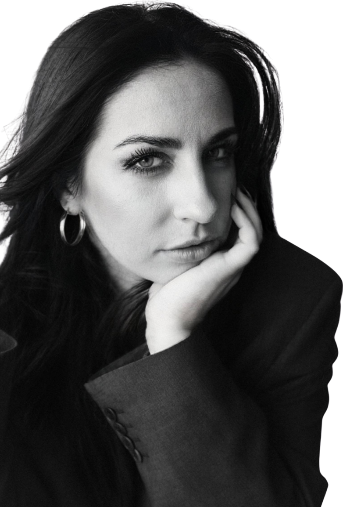
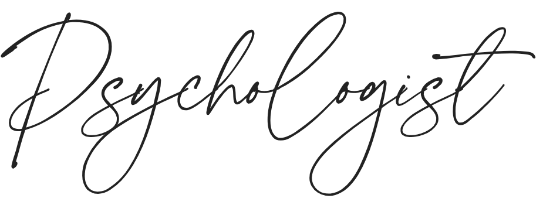
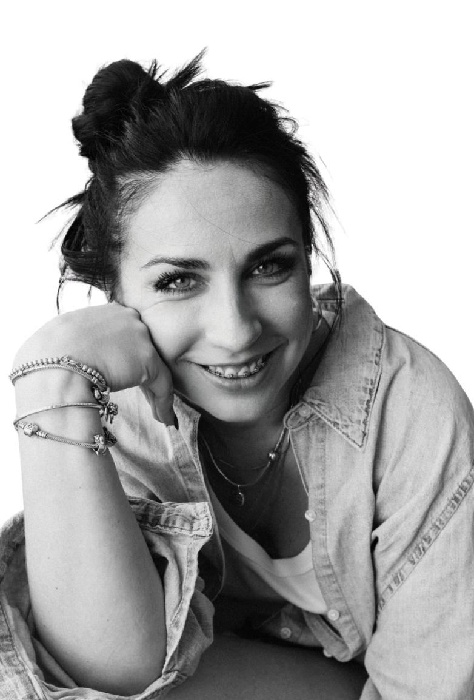

Вы чувствуете внутреннюю усталость, растерянность или потерю контакта с собой? Повторяются ли в Вашей жизни отношения или переживания, которые истощают? Сопровождают ли Вас мысли «со мной что-то не так»?
Вам не обязательно оставаться с этим в одиночестве.
Психологическое консультирование — это
безопасное и поддерживающее пространство, где
Вы можете остановиться, лучше почувствовать
себя и понять свои внутренние процессы.
Пространство, в котором появляется ясность и
формируется внутренняя опора.
Я сопровождаю Вас бережно, уважительно и на
равных.
Меня зовут Татьяна. Я психолог (магистр
психологии), гештальт-терапевт в обучении и
консультант в когнитивно-поведенческом подходе
(CBT).
Я живу и работаю в Германии и предлагаю
психологическое консультирование и
терапевтическое сопровождение для индивидуальных
клиентов и пар в онлайн-формате на русском,
украинском и немецком языках.
В своей работе я помогаю людям лучше понять
себя, справляться с эмоциональными трудностями,
проходить через жизненные кризисы и выстраивать
более устойчивый, честный и живой контакт с
собой и другими.
Я объединяю гештальт-подход с методами
когнитивно-поведенческой терапии, опираясь на
научно обоснованную психологию и внимательное,
уважительное отношение к уникальному опыту
каждого человека.
Работаю индивидуально и с парами, сочетая гештальт-подход и когнитивно-поведенческую терапию.
Создаю безопасное, поддерживающее и конфиденциальное пространство без осуждения и давления.
Не даю готовых ответов и не работаю по шаблонам — терапия для меня живой процесс.
Для меня важно создать пространство, где можно честно говорить о сложных темах — сексуальности, страхах, желаниях, злости и стыде. Если вы чувствуете, что застряли в повторяющихся сценариях, утратили контакт с собой или близость в отношениях — вы можете обратиться за поддержкой.
Консультация
Я не учу «быть сильной». Я помогаю быть живой — со всем, что есть.
Мне важно создать безопасное и поддерживающее пространство, где можно говорить честно.
Мой путь в профессию
Мой путь в психологию основан не только на
академическом образовании, но и на глубоком
личном опыте.
Более шести лет я нахожусь в личной терапии и
регулярно работаю под супервизией. Для меня
это важная часть профессиональной
ответственности и этики.
Я убеждена, что способность сопровождать
других людей требует постоянной саморефлексии,
внутренней честности и личностного развития.
Мой выбор профессии — это осознанное решение,
основанное на сочетании профессионального
обучения и собственного опыта глубоких
внутренних трансформаций.
Мой подход
В работе со мной вы можете рассчитывать на:
• безопасное и конфиденциальное пространство
• уважительное и бережное отношение
• отсутствие осуждения и оценок
• внимательное присутствие и профессиональную
поддержку
Я не даю готовых советов и не «исправляю»
людей. Моя задача — помочь вам лучше услышать
себя, понять свои чувства и найти собственные
решения и внутренние ресурсы.
Организационная информация
Моя деятельность осуществляется в рамках
психологического консультирования в
соответствии с §18 EStG (Германия) и не
включает медицинских или лечебных услуг.
Диагнозы не ставятся, и психотерапия в
медицинском смысле не проводится.
Консультации проходят онлайн.
Консультации проходят онлайн по видеосвязи
— через Zoom, Google Meet или Microsoft
Teams, в зависимости от того, что для вас
удобнее.
Это безопасное и конфиденциальное
пространство, где вы можете исследовать
свои переживания, лучше понять внутренние
процессы и открыть новые перспективы. Я
работаю в гештальт-подходе и сопровождаю
вас бережно, с уважением к вашему темпу и
личным границам.
Консультация направлена на личностное
развитие, саморефлексию и эмоциональную
ясность.
Первичная встреча предназначена для
знакомства и первичной ориентации.
Вы можете обозначить свой запрос и
спокойно почувствовать, подходит ли вам
формат нашей работы и комфортно ли вам в
этом контакте.
Никаких обязательств по продолжению нет.
Индивидуальная консультация длится 50
минут.
Парная консультация длится 90 минут.
Частота встреч определяется индивидуально
— в зависимости от вашего запроса и
потребностей.
Все консультации являются
конфиденциальными.
Пространство нашей работы — это место, где
вы можете говорить открыто и без страха
оценки, в атмосфере уважения и
безопасности.
Психологическая консультация может быть
полезна при:
• эмоциональной перегруженности
• внутренней тревоге или истощении
• трудностях в отношениях
• личных или профессиональных изменениях
• вопросах самооценки и самоценности
• темах близости, интимности и сексуальной
жизни
• стремлении к большей ясности,
устойчивости и контакту с собой
Не обязательно иметь «серьёзную проблему».
Иногда достаточно желания лучше понять
себя.
Если вы уже на этом сайте, возможно,
внутри вас есть вопрос, который требует
внимания. Консультация может стать
пространством, где этот вопрос сможет
проявиться и найти своё понимание.
Запись осуществляется по индивидуальной
договорённости.
Вы можете написать мне в удобной для вас
социальной сети или по электронной почте.
Стоимость индивидуальной консультации (50
минут) — 40 €.
Стоимость парной консультации (90 минут) —
70 €.
Оплата производится до консультации
банковским переводом или через PayPal.
Нет абонемента и обязательств. Вы
самостоятельно принимаете решение о
продолжении работы.
Бесплатная отмена или перенос возможны не
позднее чем за 24 часа до назначенного
времени.
В этом случае возможен перенос встречи или
полный возврат оплаты.
Психологическая консультация не является психотерапией и не заменяет медицинскую или лечебную помощь.
Юридическое уточнение:
Я не осуществляю медицинскую или лечебную
психотерапию в понимании немецкого
законодательства.
Моя работа — это психологическое
консультирование и психотерапевтическое
сопровождение психически стабильных взрослых.

Если чувствуешь, что сейчас важно поговорить —
напиши мне. Мы сможем обсудить твой запрос и
формат работы.
Если не уверен, подходит ли твой запрос для
работы — напиши, и мы это обсудим.